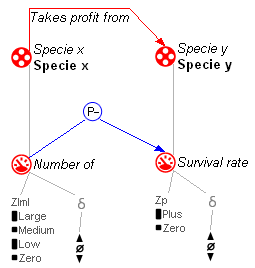
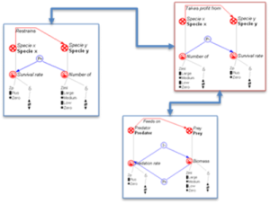
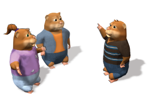

")
")
DynaLearn
 Conceptual knowledge of system's behaviour is crucial for society to understand and successfully interact with its environment. Acquiring this expertise is therefore a valuable aspect of science education. DynaLearn (Engaging and informed tools for learning conceptual system knowledge) aims to support the acquisition of conceptual knowledge in the context of environmental sciences learning, by combining:
Conceptual knowledge of system's behaviour is crucial for society to understand and successfully interact with its environment. Acquiring this expertise is therefore a valuable aspect of science education. DynaLearn (Engaging and informed tools for learning conceptual system knowledge) aims to support the acquisition of conceptual knowledge in the context of environmental sciences learning, by combining:
- Qualitative reasoning techniques
- Semantic techniques
- Virtual characters animation
Diagrammatic representations will be used for learners to articulate, analyse and communicate ideas, and thereby construct their conceptual knowledge.

Ontology mapping will be used to find and match co-learners working on similar ideas to provide individualised and mutually benefiting learning opportunities.

Virtual characters will be used to make the interaction engaging and motivating.

Visit the web of the DynaLearn project for more information.
UPM role in DynaLearn
UPM is involved in all activities related to the semantic technologies inside the DynaLearn system. Specifically, there are three main tasks in which semantics plays a major role:
- Grounding. Users ground terms in well-formed vocabularies while constructing models, to facilitate the interoperability among models at terminological level as well as the emergence of a common domain knowledge.
- Ontology-based feedback. Validation of models established through similarities with golden standards (ontology matching techniques).
- Recommendation. Collaborative filtering for (subjective) community-driven recommendation; and model-based recommendations based on the properties of the model under an objective perspective.
Participants
UPM's people involved in the development of DynaLearn project were:
Publicationes and other results
Most recent deliverables published:
- Liem, J., Beek, W. and Bredeweg, B. (2010). Multi use level workbench. DynaLearn, EC FP7 STREP project 231526, Deliverable D3.1.
- Mioduser. D. (ed.), Salles, P., Noble, R., Zitek, A., Benayahu, Y., Zurel, D., Leiba, M., Zuzovsky, R. and Nachmias, R. (2010). Lessons and assignment schemata. DynaLearn, EC FP7 STREP project 231526, Deliverable D7.1.
- André, E., Bühling, R., Bee, N., Wißner, M. and Häring, M. (2009). Models and basic animations for characters. DynaLearn, EC FP7 STREP project 231526, Deliverable D5.1.
- Bredeweg, B. (ed.), André, E., Bee, N., Bühling, R., Gómez-Pérez, J.M., Häring, M., Liem, J., Linnebank, F., Thanh Tu Nguyen, B., Trna, M. and Wißner, M. (2009). Technical design and architecture.DynaLearn, EC FP7 STREP project 231526, Deliverable D2.1.
- Salles, P., Assumpção Costa e Silva, P., Gontijo de Sá, I., Noble, R., Zitek, A., Uzunov, Y. and Mioduser, D. (2009). DynaLearn environmental science curriculum requirements. DynaLearn, EC FP7 STREP project 231526, Deliverable D6.1.
The whole list of available deliverables can be checked in the following link.
Most recent publications:
- Bert Bredeweg, Jochem Liem, Floris Linnebank, René Bühling, Michael Wißner, Jorge Gracia del Río, Paulo Salles, Wouter Beek, Asunción Gómez Pérez . "DynaLearn: Architecture and Approach for Investigating the Acquisition of Conceptual System Knowledge for Ill-defined Domains", In Proc. of Tenth International Conference on Intelligent Tutoring Systems (ITS 2010), Pittsburgh, Pennsylvania, USA, June 2010.
- Bredeweg, B., Gómez-Pérez, A., André, E. and Salles, P. (2009). DynaLearn - Engaging and Informed Tools for Learning Conceptual System Knowledge. Cognitive and Metacognitive Educational Systems (MCES2009). Pirone. R., Azevedo, R. and Biswas, G. (eds.), pages 46-51, AAAI Fall Symposium, Arlington, Virginia USA, 5-7 November, Technical report FS-09-02, AAAI Press.
The whole list of available publications can be checked in the following link.
Additional information
- Start date: 02/01/2009
- End date: 12/31/2011
- Global budget: 3.193.495 €
Job opportunities
There are currently no job offers or studentships available in this project. For offers in other projects or research areas of the group, please check in our job opportunities section.
However, you may contact Asunción Gómez-Pérez to check whether there are any potential open positions in the near future.